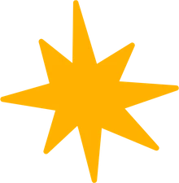
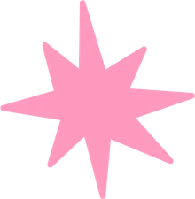
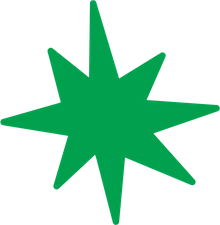
sua doação faz a diferença!
Doe alimentos e brinquedos para a Cruz Vermelha e ajude a levar o espírito de Natal para famílias que também merecem vivê-lo.
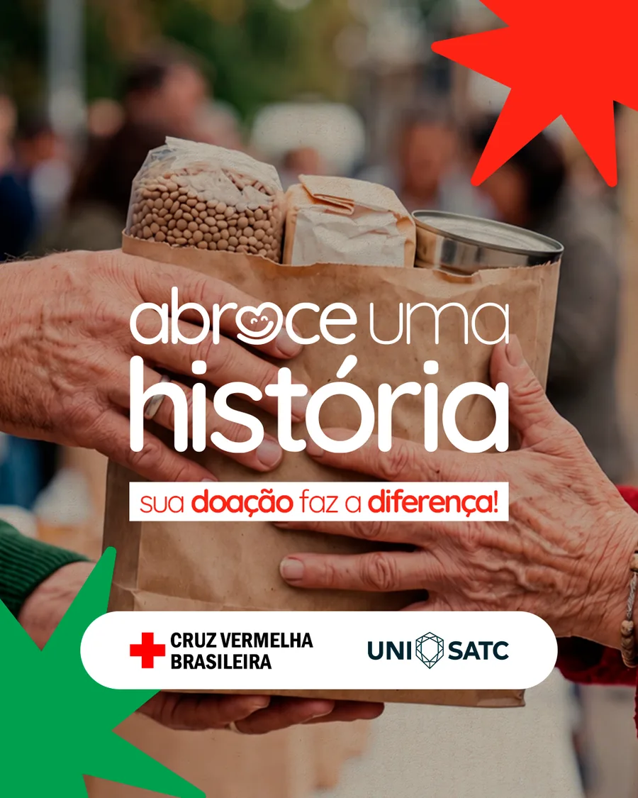
Abraçar histórias é uma forma de cuidar.
A Cruz Vermelha e a UniSATC se unem para conectar pessoas em busca de um bem comum: fazer o bem por meio da solidariedade.
Por trás de cada necessidade existe uma história, e quase sempre a gente não a conhece. Doar não é só entregar alguma coisa: é acolher a vida de alguém e fazer a diferença naquele momento.
Você consegue lembrar de uma coisa que alguém fez por você e nunca esqueceu?
Neste Natal, você pode ser essa lembrança para alguém.
Até onde chega um abraço?
Doe aqui
- leite
- farinha de trigo
- óleo de soja
- café
- brinquedos usados
- farinha de mandioca
Alimentos dentro da validade e com a embalagem fechada. Brinquedos usados em bom estado.
Duas forças unidas por um mesmo propósito.
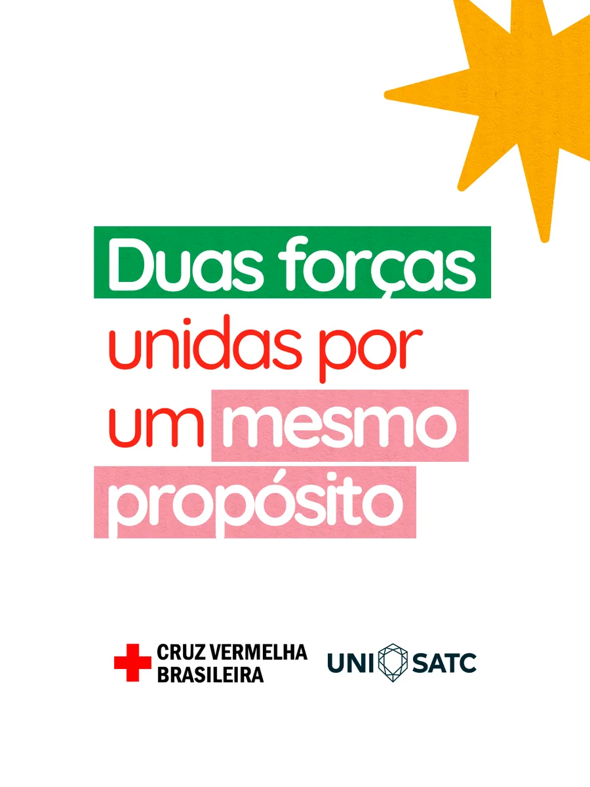
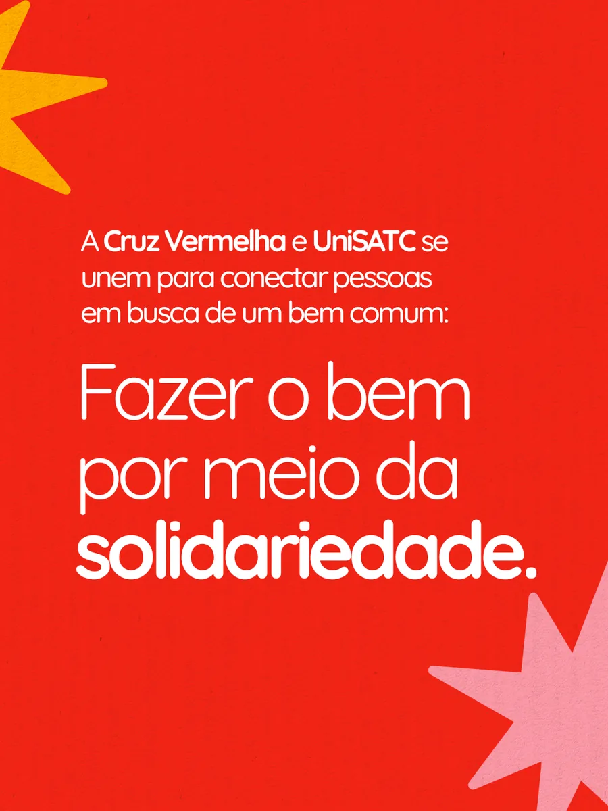
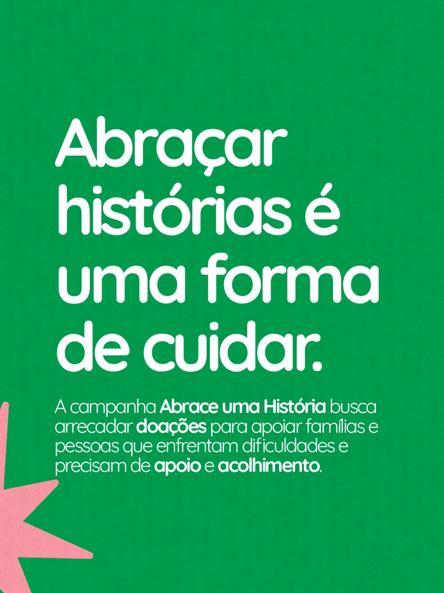
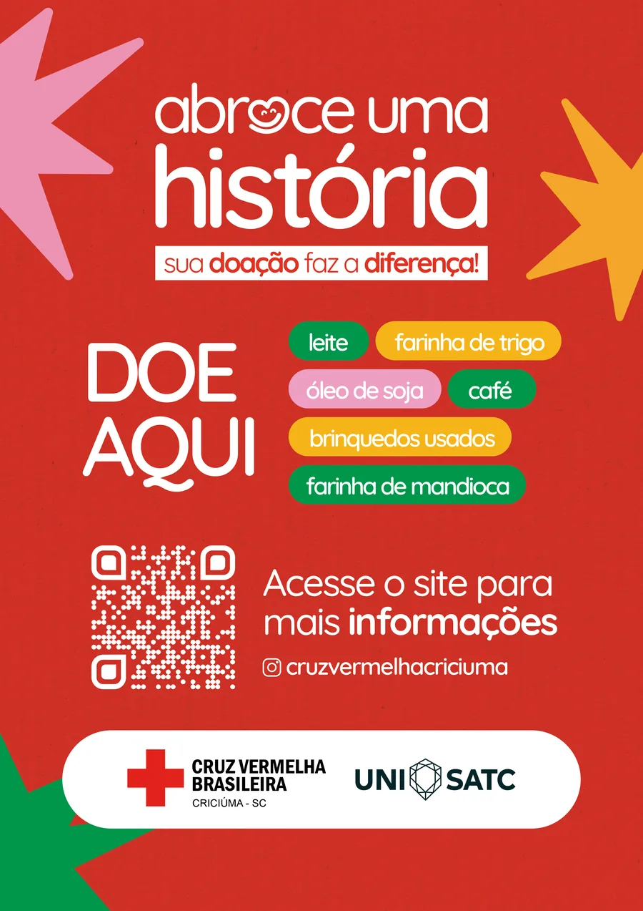
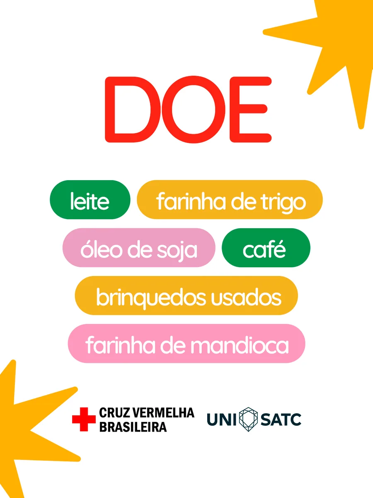
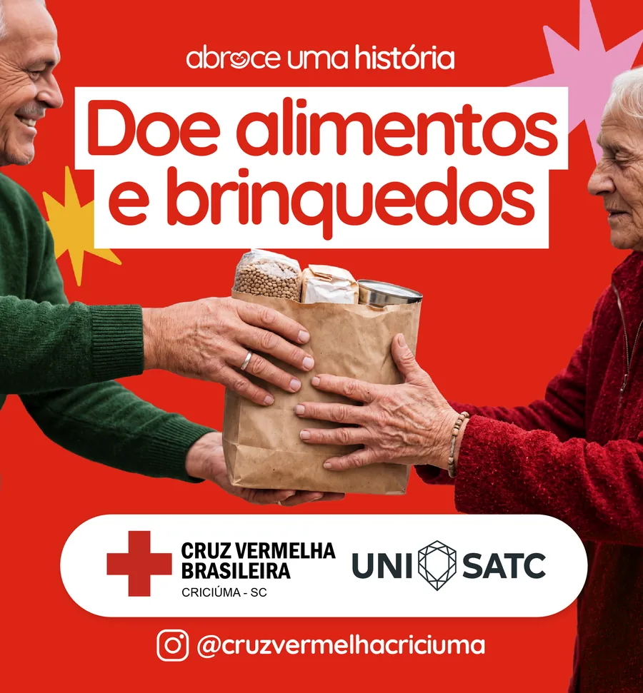
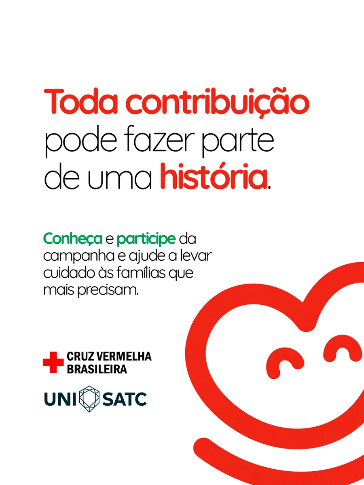
Quem abraçou essa história com a gente.
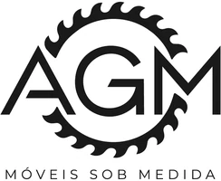
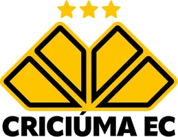
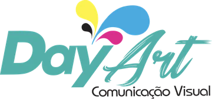
Feita por alunas de Publicidade e Propaganda.
Projeto Integrador do curso de Publicidade e Propaganda da UniSATC, criado para a Cruz Vermelha Criciúma.
- Ana Júlia Manarin
- Jéssica Loureiro
- Letícia Ghisi
- Maria Eduarda Anzolin
- Maria Eduarda Neto
- Nathalia Zanellato
- Valéria Ferreira